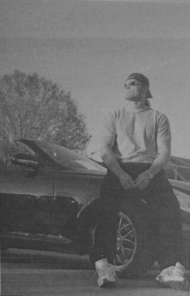

Книги
КнигиПредисловие Мика Фоли
Перевод Тани (Dark Bird) для VSplanet.net
Несколько лет назад меня попросили прокомментировать мое наследие в рестлинг-бизнесе. Когда я думал об этом, я понял, что мнения сверстников о моих способностях на ринге имеют сравнительно мало общего с тем, как бы я хотел, чтобы меня запомнили. Наконец, я сказал, что хочу остаться в памяти как человек, который заставлял своих фанов улыбаться, и который всегда хорошо относился к молодым парням в бизнесе. Имея это в виду, я считаю, что Адам Коупленд, «Edge», является основной частью этого наследия.
К лету 2000 года WWE некоторое время было под атакой критиков, которые считали, что шоу было слишком рискованным и неподходящим для детей. Я в значительной степени не согласился, и сделал это моей миссией — стать счастливым, тупым, невинным фейсом в профессиональном рестлинге. Адам и Джей Ресо (более известный, как его командный партнер, Кристиан) были моими партнёрами в этом забавном деле. Вместе наши пародии стали известны как Credgeley (для Кристиана, Эджа и Фоли) и установили стандарт для фальшивой комедии и совершенного дурачества, которые должны пройти через века.
Интересно, что посреди всего этого веселья, E&C находили время разрывать зал на многих шоу WWE, включая матч на SummerSlam того года, совершенно блестящий поединок, который также должен войти в историю.
Увы, хорошие времена заканчиваются, вот и я сменил рестлинг сцену на более практическую роль отцовства, а Адам и Джей получили сокрушительные новости (сокрушительные для меня, по крайней мере), что они должны вести себя как настоящие люди. Настоящие люди, им было сказано, не играют казусы.
По иронии судьбы, как бы далеко люди не заходили, они не могут быть более настоящими, чем Адам Коупленд. Он умный, вдумчивый молодой человек и атлетичный, харизматичный исполнитель. Он принес в жертву своё тело для развлечения поклонников WWE, и в тоже время, платя эту жертву, нашел время, чтобы поделиться своей историей с нами. То, что он написал это сам, не удивило меня, я всегда предполагал, что он это может. Его история — это не история борца в возрасте, оглядывающегося на свои долгие годы. Нет ничего плохого в этом. Я написал так сам. Но это и не история молодой суперзвезды, размышляющей о быстром подъеме по лестнице рестлинга.
Скорее, это история о молодом человеке на перекрестках нашей отрасли. История спортсмена готовящегося на пороге величия, который с обратным отсчетом считает секунды, пока угрожающая карьере травма будет наконец-то преодолена со значительной командной помощью Матери Природы и Отца Времени, а затем может команда с тайным партнером, известным как Потенциал, Ещё Не Выполнена.
Как фан рестлинга, я не могу дождаться, чтобы увидеть. Как друг, я буду нервничать, но с уверенностью. Как наставник, я буду гордиться взрощенными плодами и всегда буду готов рассмотреть просьбу написать предисловие к уникальной истории Адама, как большой части моего собственного наследия.
— МИК ФОЛИ
